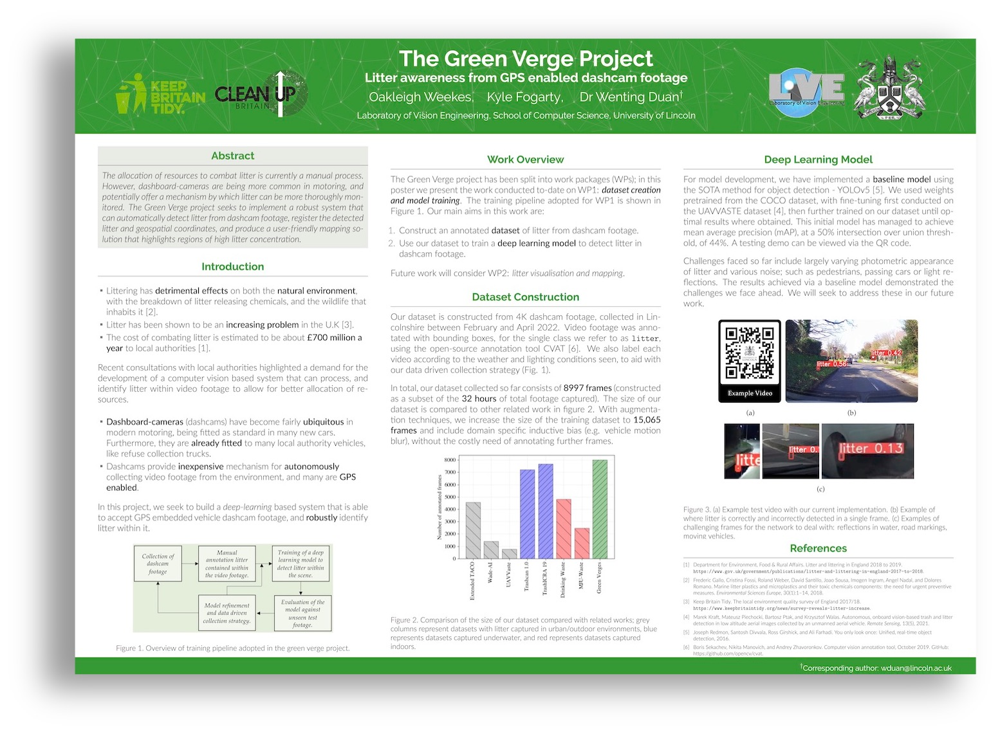

Project Overview
The allocation of resources to combat litter is currently a manual process. However, dashboard-cameras are being more common in motoring, and potentially offer a mechanism by which litter can be more thoroughly monitored. The Green Verge project seeks to implement a robust system that can automatically detect litter from dashcam footage, register the detected litter and geospatial coordinates, and produce a user-friendly mapping solution that highlights regions of high litter concentration.
Find Out More 🔎
Dataset and Annotations
Object Detection Model
Mapping
Future Work
About / Contact Us
Project Poster 🆕

To see a higher resolution version of our poster, please click here. This poster was presented at the University of Lincolns College of Science Research Showcase on the 9th June 2022.